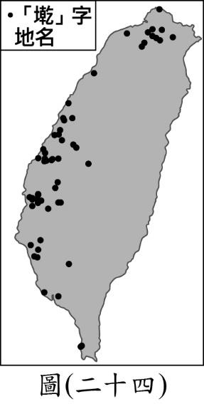
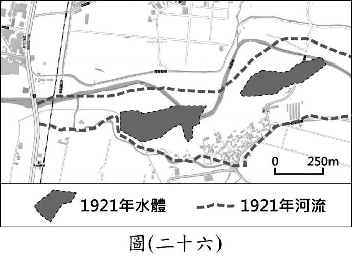
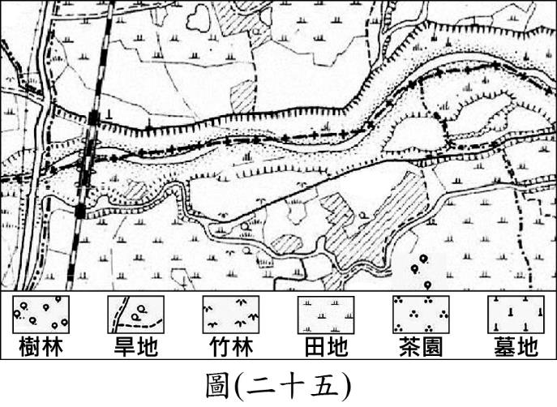

★ 國中教育會考・5B逆襲衝A專用 ★
111 年國中教育會考
【社會科】解題破譯實戰講義
全 54 題題目剖析 ✕ 名師秒殺招 ✕ 5B避坑指南 ✕ 完整題圖
🎯 社會科 5B 衝 A 核心黃金法則：
• 穩賺基本盤 100% 入袋：前 40% 的基本觀念題，審題圈關鍵字，一題不漏！
• 題眼圈選秒殺招：長篇情境題先看最後問句，看清圖表橫縱座標與極端值。
• 避開 5B 典型心魔：單位換算、正負號變號、未依題目限制條件盲目作答。
• 模擬實戰計時：左頁實戰模擬，右頁名師破譯與避坑自我檢核。
41
圖(二十一)是日本繪製的第二次世界大戰形
勢圖，三種圖例代表與日本三種不同關係。
從圖中標示的圖例，可得知這是1941 年底太
平洋戰爭爆發後的世界形勢，最主要的判斷
依據應為下列何者？
(A) 英國和德國使用不同圖例
(B) 英國和美國使用相同圖例
(C) 朝鮮和日本使用相同圖例
(D) 德國和日本使用相同圖例
草稿與推導區
42
圖(二十二)呈現甲、乙、丙三國的貿易情況。若甲國受匯率變動的影響，使得
某段時間的進、出口商品數量皆大幅增加，則根據圖中內容判斷，該段時間
甲國貨幣的匯率變化，最可能為下列何者？
(A) 相對乙、丙兩國貨幣皆升值
(B) 相對乙、丙兩國貨幣皆貶值
(C) 相對乙國貨幣升值，但相對丙國貨幣貶值
(D) 相對乙國貨幣貶值，但相對丙國貨幣升值
草稿與推導區
43
圖(二十三)是某一時期的政治宣傳漫畫，圖中「大手」代表當
時的國際組織，領導各國對抗侵略者。根據內容判斷，該國際
組織最可能是下列何者？
(A) 聯合國
(B) 國際聯盟
(C) 華沙公約組織
(D) 石油輸出國家組織
草稿與推導區
【題組】二、題組：(44～54題)
閱讀下列選文，回答第 44 至 45 題：
圖(二十二)
圖(二十三)
1855年，美商威廉士洋行的商船航行至臺灣府 安平外海，並派人上岸詢問是否
能在當地貿易。經過安排，船長和臺灣道裕鐸在打狗會面，裕鐸在會談中告知船長，
外國商船如果直接在安平停泊，並不符合規定，臺灣道將受到朝廷處罰，但裕鐸和
打狗地方官員可以私下允許外國商船，停靠遠離政治核心的打狗進行貿易。
然而，實際上官員後來往往放任外國商船停靠安平，未能嚴格執行禁令。過了
數年，新任的臺灣道孔昭慈於1859年，又要求外國商船「不准像之前一樣在安平附
近起卸貨物」。有位英國商人分析：「這並非臺灣道刻意禁止外商在臺灣府貿易，而
是因為府城當地泉州人組成的商人團體，跑去向福建巡撫告狀，指控外國商船收購
物產，造成物價上漲，影響了本地商人的生意。」
& 臺灣道：臺灣建省前，在臺灣的最高文官。
44
根據上文中裕鐸與洋行的會談結果，當時臺灣對外貿易的情況，最可能是下列何者？
(A) 當時臺灣尚未對外開港，裕鐸嚴禁洋商在臺貿易
(B) 當時臺灣尚未對外開港，實際上洋商已來臺貿易
(C) 當時臺灣已經對外開港，洋商可在臺灣各港口貿易
(D) 當時臺灣已經對外開港，裕鐸仍阻撓洋商在臺貿易
草稿與推導區
45
根據上文，外國商人分析臺灣道重申外國商船不得在安平附近起卸貨物的原因，最可能與下列
何者有關？
(A) 安平與鹿耳門泥沙淤積，易造成擱淺
(B) 府城商人透過「郊」來維護自身利益
(C) 日本出兵臺灣南部，清帝國提高警戒
(D) 許多府城商人組成「郊」與洋行合作
草稿與推導區
【題組】閱讀下列選文，回答第 46 至 48 題：



臺灣和地形有關的地名，多是古人依照當時的地理環境
所命名，隨著時間變化，原先的山丘、河或湖可能會變遷甚
至消失，僅剩下地名而已。因此，透過地名可推估過去的地
景樣貌，例如「墘」字代表位於某一地物或水體的旁邊，如
厝墘、田墘、港墘與溪墘等，圖(二十四)為「墘」字地名的
分布圖。
小瑜家鄉地名也有「墘」字，雖然現今已經看不到當時
的地貌；為了印證上述命名原則，她找到1921年日治時期家
鄉的地圖(圖二十五)，並將當時的河流及水體標示在現今的
電子地圖(圖二十六)上，發現與上述原則是一致的。
圖(二十五)
圖(二十六)
圖(二十四)
46
根據圖(二十四)中「墘」字地名的分布判斷，下列關於「墘」字地名的推論何者最為合理？
(A) 分布於閩南族群集中區，屬閩南族系的地名
(B) 分布於客家族群集中區，屬客家族系的地名
(C) 分布於現今原住民居住地，為原住民的地名
(D) 受西班牙占領影響，為西班牙語音譯的地名
草稿與推導區
47
根據圖(二十五)判斷，在日治時期小瑜的家鄉最可能以哪種產業活動為主？
(A) 水稻耕作
(B) 樟腦提煉
(C) 茶葉種植
(D) 海鹽晒製
草稿與推導區
48
根據上文中地名的命名原則及圖(二十五)與圖(二十六)的資訊判斷，小瑜的家鄉地名最可能為下
列何者？
(A) 海墘
(B) 潭墘
(C) 岸壁墘
(D) 黑礁墘
草稿與推導區
【題組】閱讀下列選文，回答第 49 至 51 題：
過去以茶文化為主的亞洲人，對咖啡的接受度越來越高，更逐漸在各地形
成獨特的咖啡文化。近年臺灣也吹起喝咖啡的風潮，路上常看到人手一杯咖
啡。其實早在日治時期，日本就已將飲用咖啡的習慣帶入臺灣，戰後有業者
創立供內用的專業咖啡店，還有廠商生產即溶與罐裝咖啡，但直到九○年代末
期，美式咖啡連鎖品牌進駐臺灣引進外帶現煮咖啡後，咖啡市場才出現了關鍵
性的改變，讓喝咖啡變成日常生活的一部分。2018年時，臺灣平均每人一年喝
下超過200杯咖啡，咖啡豆的進口量是2008年時的兩倍以上，而且咖啡商機還在
持續成長中。
而南韓人比臺灣人更愛喝咖啡，南韓在亞洲地區的咖啡飲用量名列前茅，
根據相關調查報告推估，南韓平均每人一年喝下超過500杯咖啡。咖啡幾乎是
南韓日常生活中不可缺少的一部分，不只是上班族的必備品，也相當受學生喜
愛。在南韓的校園中，不少學生常因熬夜看書導致白天精神不濟，於是飲用咖
啡來提神與增加專注力，但攝取過量咖啡因會有頭暈、心跳加速、睡眠障礙等
症狀，可能不利於青少年神經及心血管系統的發育。南韓政府擔心校園內飲用
咖啡的風氣，對於未來整體的國民健康、醫療資源會產生負面影響，因此修法
規定自2018年9月起，全面禁止在高中以下校園內販售含有咖啡因的飲料。
或許臺灣人的咖啡癮還沒有南韓這麼嚴重，不過我國已有相關法令規範高
中以下校園內飲品及點心的販售項目，違規販售不符規範的商品將被主管機關
要求下架，以避免類似的問題在臺灣發生。
49
文中針對我國咖啡的相關敘述，下列何者最適當？
(A) 咖啡產品貿易總額超越茶產品
(B) 咖啡豆的進出口貿易呈現出超
(C) 飲用咖啡的習慣受到文化交流影響
(D) 國小內販售咖啡將會遭受刑罰處罰
草稿與推導區
50
根據文中內容判斷，南韓政府的作法與下列何項敘述最相符？
(A) 透過負向誘因影響校內師生的消費能力
(B) 透過正向誘因影響校內商品的販售種類
(C) 透過制度變革影響校內師生的消費能力
(D) 透過制度變革影響校內商品的販售種類
草稿與推導區
51
文中所提及南韓政府修改法律的目的，與下列我國的何項作法最類似？
(A) 受監護宣告者自行訂定的契約不具效力
(B) 雇主不得因性別因素而對員工有差別待遇
(C) 國小學童不得出入有害身心發展的不良場所
(D) 家庭暴力受害者可聲請保護令以避免受到傷害
草稿與推導區
【題組】閱讀下列選文，回答第 52 至 54 題：
空氣汙染是當代世界嚴重的問題，過去的
英國也曾深受空汙的危害。日本 明治時代文學
家夏目漱石在旅英期間的日記中寫道：「在倫敦
的街上散步時吐了口痰，當我看到自己吐出一團
全黑的物體時真是吃驚。幾百萬市民每天都吸著
煤煙和塵埃，汙染著他們的肺。」當時人們以煤
作為驅動蒸汽機以及家中暖爐、廚具的燃料，
加上西歐地區盛行風的吹拂，使空氣汙染物不斷飄向城市的下風處，形成如
圖(二十七)煙霧瀰漫的景觀。
燃煤帶來的空氣汙染會影響健康，可能降低新生兒存活率，或是使得兒童
發育遲緩。十九世紀時英國部分城市的居民居住區域分布也反映出貧富差距，
資本家與中產階級為了尋求較好的生活品質，紛紛遷往城市中汙染較少的區
域，而較為窮困的低技術勞動階級，因受工作地點和經濟考量所限，只能居住
於汙染嚴重的區域。因此，思想家恩格斯在當時就發出「只有勞動階級才會呼
吸受汙染的空氣」的不平之鳴。
圖(二十七)
圖(二十八)
52
文中日本文學家描述的城市現象，與下列何者的關係最密切？
(A) 工業革命
(B) 宗教改革
(C) 啟蒙運動
(D) 文藝復興
草稿與推導區
★ 考前衝刺・名師最後叮嚀 ★
社會科【衝 A 臨場 4 大保命守則】
1. 字斟句酌圈題眼：題幹中的「何者非」、「依據本文」、「唯一改變條件」務必用筆重重圈起！
2. 圖表橫縱軸先看清：圖表永遠是考題的心臟，看清單位（公尺/公里、秒/小時）才不會白白失分。
3. 卡題 60 秒果斷跳過：會考是算總分而非拼單題，先將能穩拿的分數全部放進口袋！
4. 相信第一直覺與常理：極端絕對的選項往往是陷阱，冷靜回歸基礎概念即可迎刃而解。